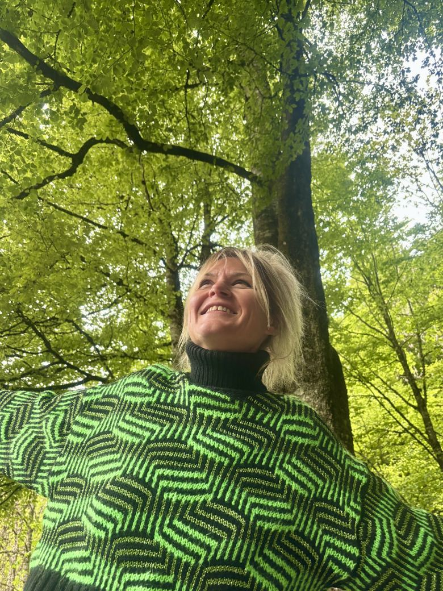

Conscience du corps
Redécouvrir ses appuis, ses tensions habituelles, et l'organisation posturale qui conditionne chaque geste respiratoire et vocal.
Retraites
Des espaces de travail doux et profond — somatique, respiratoire, vocal — guidés par une approche clinique. Parce que l'équilibre ne s'apprend pas : il se ressent.

Au fil des années et des prises en charge, un constat s'est imposé avec une clarté croissante : les tensions vocales, posturales et respiratoires que je rencontre chez mes patients ne sont pas isolées. Elles dessinent un portrait commun — celui d'une époque où le souffle s'est progressivement effacé, comprimé par l'accélération du quotidien, la surcharge cognitive, le manque d'espace intérieur.
Nous sommes des êtres animés par notre souffle. Pourtant, pour beaucoup d'entre nous, respirer est devenu quelque chose que l'on subit — et non plus un acte vivant.
Ce travail de conscience proprioceptive — apprendre à sentir son corps, ses appuis, ses tensions — révèle à quel point ces schémas sont partagés. Ils ne relèvent pas du seul pathologique : ils parlent d'une société qui a progressivement exclu le souffle de l'équilibre quotidien.
Les retraites que je propose sont une réponse à cet enjeu. Elles ne sont pas des parenthèses de bien-être générique, mais des espaces de travail doux et profond — somatique, respiratoire, vocal — guidés par une approche clinique rigoureuse. Parce que l'équilibre ne s'apprend pas, il se ressent. Et il commence, toujours, par un souffle.
Prendre conscience des mécanismes qui construisent notre voix, c'est entrer dans une compréhension plus intime du fonctionnement de son propre corps. C'est apprendre à ressentir les vibrations, à positionner sa respiration, à découvrir l'étendue de son potentiel vocal — souvent bien plus riche qu'on ne l'imagine.
Redécouvrir ses appuis, ses tensions habituelles, et l'organisation posturale qui conditionne chaque geste respiratoire et vocal.
Réapprendre à laisser entrer l'air — avant même de chercher à contrôler l'expiration — pour retrouver un équilibre tonique naturel et durable.
Explorer la voix comme outil de reconnexion — au corps, à l'espace intérieur, à l'autre. Le chant comme chemin thérapeutique et non comme performance.
Prochaine retraite
Chalet Zen Space, au Grand-Bornand (France).
En collaboration avec Ela Zingerevich — zingermethod.com
« N'aie pas peur d'avancer lentement, aie peur de rester immobile. »
Proverbe chinois
Détails complémentaires à venir. Pour toute question ou pour réserver, n'hésitez pas à me contacter.
Envie de vivre ce temps ou simplement d'en savoir plus ? Écrivez-moi pour recevoir le programme et la brochure.